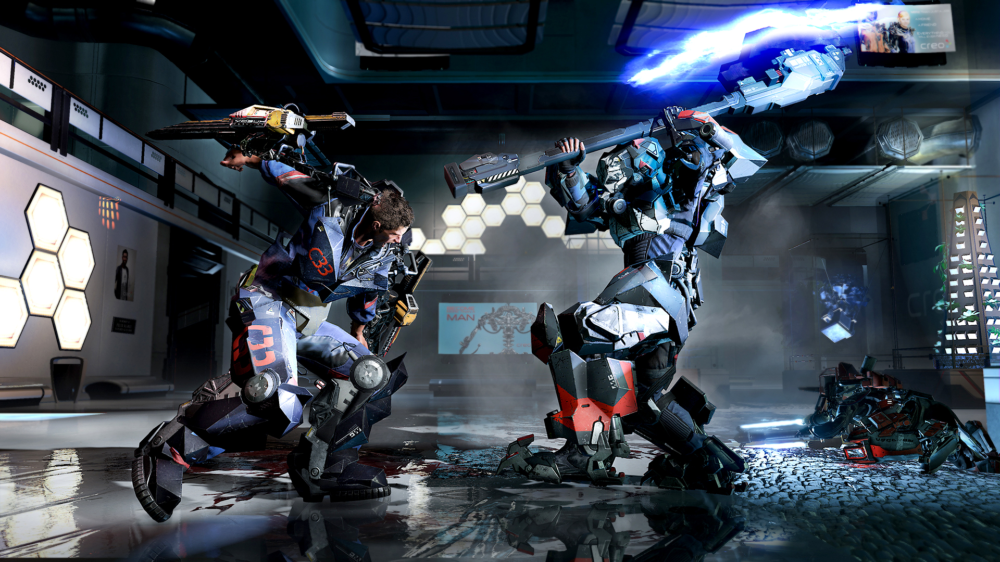
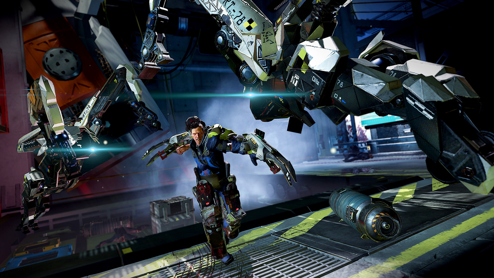
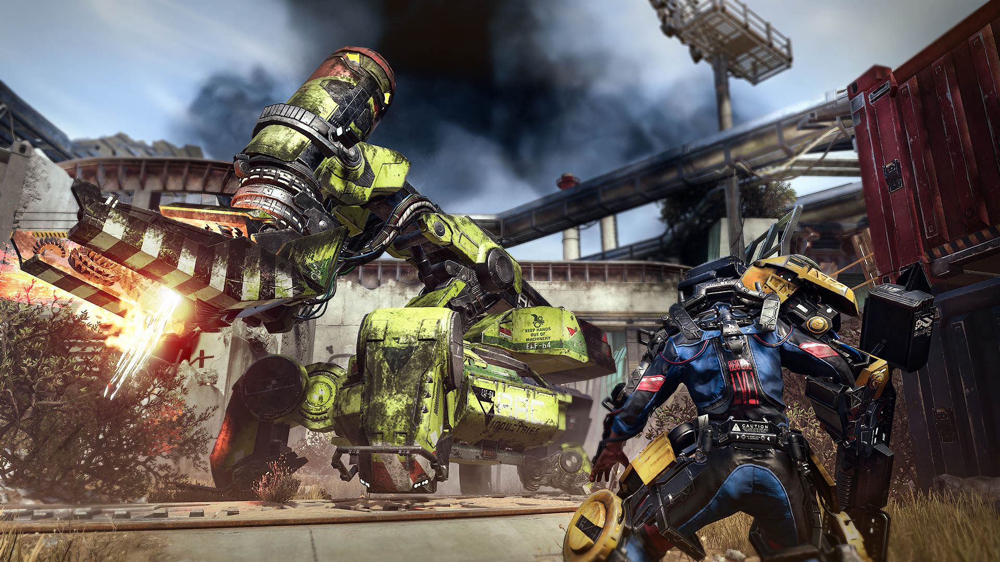

Warren
Warren serves as the focal point of the game's narrative. He is initially introduced as an ordinary worker within the dystopian world of "The Surge." Unlike traditional video game protagonists, Warren lacks any specialized combat training or exceptional abilities at the outset. His relatable background makes him a character that players can easily connect with. However, Warren's life takes a dramatic turn when a catastrophic accident occurs at the CREO corporation, where he is employed. This event results in Warren being equipped with an advanced exoskeleton suit called the Exo-Rig. This transformation, from an average worker to a powerful and augmented warrior, forms the central premise of the game's storyline.
One notable aspect of Warren's character is his lack of spoken dialogue. Instead of using voice acting to convey his emotions and thoughts, the game relies on environmental storytelling, visual cues, and the reactions of other characters to communicate Warren's journey and inner struggles. This choice adds a layer of mystery to his character and allows players to project their own feelings onto him. Throughout the game, players witness Warren's determination to survive and adapt to the hostile environment within the CREO complex. He evolves from a vulnerable and inexperienced individual into a skilled and resourceful combatant. This character development is evident through his increasing combat proficiency and his growing familiarity with the technological horrors that inhabit the game world.
One intriguing aspect of Warren's character is his mysterious past. As players explore the game world, they uncover subtle hints and clues about his life before the events of the game. These breadcrumbs of information add depth to his character and motivate players to uncover the secrets and motivations that drive him. Furthermore, The Surge offers players agency in shaping Warren's character and the game's outcome through their choices and decisions. This element of player influence contributes to the role-playing aspect of the game, allowing players to shape Warren's actions and moral compass. 
In essence, Warren in The Surge is a character who undergoes a significant transformation and growth, evolving from an everyday worker to a resilient and adaptive survivor in a perilous world. His voiceless nature, player-driven choices, and mysterious past contribute to the complexity of his character within the game's narrative.